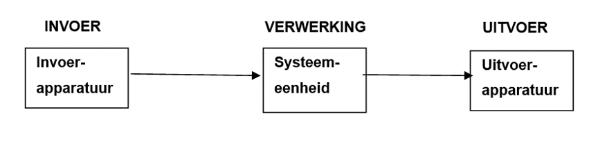

Welkom!
 Welkom op deze website! Je zult hier een kleine samenvatting krijgen over de belangrijkste onderwerpen
betreft informatica. De onderwerpen zijn verdeeld in de categorieeën; kleurmodellen,
bestandsformaten en het binair stelsel. Veel lees plezier!
Welkom op deze website! Je zult hier een kleine samenvatting krijgen over de belangrijkste onderwerpen
betreft informatica. De onderwerpen zijn verdeeld in de categorieeën; kleurmodellen,
bestandsformaten en het binair stelsel. Veel lees plezier!
Algemene informatie

Allereerst, appararatuur bestaat uit systeemeenheden en randappparaten.
Gegevens worden in de computer gebracht door invoerapparaten
zoals; muizen, toetsenborden of scanners.
Vervolgens zorgt de processor voor de verwerking van de informatie. Dan wordt via een
uitvoerapparaat de informatie aan de gebruiker getoond. Voorbeelden van
uitvoerapparaten zijn; beeldschermen en printers.